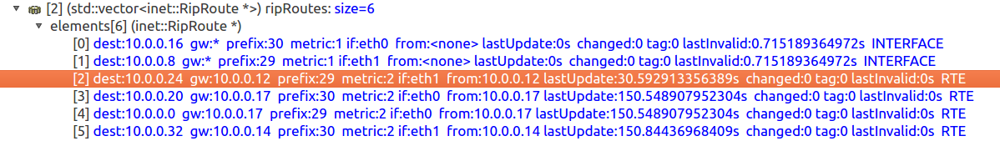
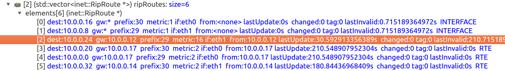

Step 4. RIP Timers: Timeout and Garbage Collection¶
Introduction¶
In the previous step, we observed how RIP responds to link failures through immediate detection. However, in real networks, routers may not always be able to detect link failures immediately. Instead, RIP relies on a system of timers to manage route aging, invalidation, and removal.
RIP uses several timers to maintain its routing tables and ensure proper operation. In this step, we’ll focus on two critical timers:
Timeout Timer (also called the route aging timer): Controls how long a route remains valid without receiving updates
Garbage Collection Timer (also called the flush timer): Controls how long an invalid route remains in the routing table before being removed
These timers play a crucial role in RIP’s ability to adapt to network changes while maintaining stability and preventing routing loops.
Goals¶
In this step, our goals are to:
Understand the role of RIP timers in managing route aging and removal
Observe how the timeout timer and garbage collection timer operate
Explore different scenarios of link recovery and their impact on routing tables
Understand how these timers contribute to network stability during topology changes
Understanding RIP Timers¶
RIP routers exchange routing updates periodically (typically every 30 seconds). When a router receives an update for a route from a neighbor, it resets the timeout timer associated with that route. If updates for a particular route stop arriving, the timeout timer will eventually expire.
Here’s how the timer system works:
Regular Updates: Routers send routing updates every 30 seconds (by default)
Timeout Timer: When a router stops receiving updates for a route:
The timeout timer counts down from 180 seconds (default value)
If no update is received before the timer expires, the route is marked as unreachable (metric set to 16)
The route remains in the routing table, but is no longer used for forwarding
Garbage Collection Timer: Once a route is marked as unreachable:
The garbage collection timer starts counting down from 120 seconds (default value)
The router continues to advertise the route with a metric of 16 (infinity)
When this timer expires, the route is completely removed from the routing table
This two-phase approach to route removal helps ensure that all routers in the network have time to learn about unreachable routes before they are completely removed from routing tables.
Network Configuration¶
We use the same network topology as in the previous steps. The configuration in omnetpp.ini is:
[Config Step4A]
description = "RIP timers: Link comes back online before the timeout timer expires"
extends = Step2
sim-time-limit = 1000s
# Enable split horizon in order for the scenario to work properly
*.router*.rip.ripConfig = xml("<config> \
<interface hosts='router*' mode='SplitHorizon' /> \
</config>")
# disable ping application
*.host0.numApps = 0
# Break the router2 <--> switch1 link at t=50 s. and reconnect at t=150 s.
*.scenarioManager.script = xmldoc("scenario5.xml")
Experiments: Three Link Recovery Scenarios¶
To understand how RIP timers work, we’ll simulate a link failure followed by
recovery at different times. We’ll disconnect the link between router2 and
switch1 at t=50s, and then reconnect it at different times to observe how
the timers affect routing behavior.
We’ll examine three scenarios:
Scenario A: Link recovers before the timeout timer expires (at t=150s)
Scenario B: Link recovers after the timeout timer expires but before the garbage collection timer expires (at t=300s)
Scenario C: Link recovers after both timers expire and the route is purged (at t=400s)
These scenarios are configured in omnetpp.ini as Step4A, Step4B, and
Step4C respectively, each using a different scenario script.
Scenario A: Recovery Before Timeout Expiration¶
In this scenario, we break the link at t=50s and reconnect it at t=150s, before
the 180-second timeout timer expires. The scenario is defined in
scenario5.xml:
<!-- scenario5.xml -->
<scenario>
<at t="50">
<disconnect src-module="router2" dest-module="switch1" />
</at>
<at t="150">
<connect src-module="router2" src-gate="ethg$o[0]" dest-module="switch1" dest-gate="ethg$i[3]" channel-type="inet.node.ethernet.Eth10M" />
<connect src-module="switch1" src-gate="ethg$o[3]" dest-module="router2" dest-gate="ethg$i[0]" channel-type="inet.node.ethernet.Eth10M" />
</at>
</scenario>
When the link recovers before the timeout timer expires:
The router immediately resumes receiving RIP updates for the previously affected routes
The timeout timer is reset to its initial value
Normal routing operation continues without any disruption to the routing table
No routes are marked as unreachable or removed
This represents the best-case scenario for network recovery, as it minimizes disruption to routing operations.
Scenario B: Recovery After Timeout, Before Garbage Collection¶
In this scenario, we break the link at t=50s and reconnect it at t=300s. This is
after the 180-second timeout timer expires (at t=230s) but before the 120-second
garbage collection timer expires (which would happen at t=350s). The scenario is
defined in scenario6.xml:
<!-- scenario6.xml -->
<scenario>
<at t="50">
<disconnect src-module="router2" dest-module="switch1" />
</at>
<at t="300">
<connect src-module="router2" src-gate="ethg$o[0]" dest-module="switch1" dest-gate="ethg$i[3]" channel-type="inet.node.ethernet.Eth10M" />
<connect src-module="switch1" src-gate="ethg$o[3]" dest-module="router2" dest-gate="ethg$i[0]" channel-type="inet.node.ethernet.Eth10M" />
</at>
</scenario>
When the link recovers after the timeout timer expires but before the garbage collection timer expires:
The affected routes have already been marked as unreachable (metric=16)
When the link recovers, the router begins receiving RIP updates again
Since the routes are still in the routing table (though marked as unreachable), they can be “reactivated” with their new metrics
The garbage collection timer is canceled, and normal routing operation resumes
This scenario demonstrates RIP’s ability to recover from longer outages, though with a period where the routes are considered unreachable.
Scenario C: Recovery After Complete Route Removal¶
In this scenario, we break the link at t=50s and reconnect it at t=400s. This is
after both the timeout timer (expires at t=230s) and the garbage collection
timer (expires at t=350s) have expired. The scenario is defined in
scenario7.xml:
<!-- scenario7.xml -->
<scenario>
<at t="50">
<disconnect src-module="router2" dest-module="switch1" />
</at>
<at t="602">
<connect src-module="router2" src-gate="ethg$o[0]" dest-module="switch1" dest-gate="ethg$i[3]" channel-type="inet.node.ethernet.Eth10M" />
<connect src-module="switch1" src-gate="ethg$o[3]" dest-module="router2" dest-gate="ethg$i[0]" channel-type="inet.node.ethernet.Eth10M" />
</at>
</scenario>
Let’s examine what happens in detail:
The link breaks at t=50s, and
router1stops receiving updates about the 10.0.0.24/29 network fromrouter2The last update was received at approximately t=30.5929s, as shown in this routing table entry:
{kind=link}

At t=210.5929s (180 seconds after the last update), the timeout timer expires, and the route is marked as unreachable with a metric of 16:
{kind=link}

At t=330.5929s (120 seconds after being marked unreachable), the garbage collection timer expires, and the route is completely removed from the routing table
When the link recovers at t=400s, the router must learn about the route from scratch through new RIP updates, as if it were discovering the route for the first time
This scenario represents the most disruptive case, requiring complete rediscovery of routes after the link recovery.
The Importance of RIP Timers¶
RIP timers serve several important purposes in the operation of the protocol:
Detecting Failures: The timeout timer provides a mechanism to detect when a neighbor or route is no longer available, even without explicit link-down notifications
Preventing Loops: The garbage collection timer helps prevent routing loops by ensuring that invalid routes are advertised as unreachable before being removed
Stability: The timers add stability to the network by preventing rapid flapping of routes due to transient failures
Controlled Convergence: The timer values are chosen to balance between quick adaptation to network changes and network stability
Understanding these timers is crucial for troubleshooting RIP networks and predicting how the network will respond to failures and recoveries.
Conclusion and Next Steps¶
In this step, we’ve explored how RIP uses timers to manage route aging, invalidation, and removal. We’ve seen how the timeout timer and garbage collection timer work together to handle network changes in a controlled manner.
While these timers help maintain network stability, they can also lead to slow convergence after failures. In the next step, we’ll explore how triggered updates can speed up the convergence process by allowing routers to send updates immediately when their routing tables change, rather than waiting for the next scheduled update.
Sources:
omnetpp.ini,
scenario5.xml,
scenario6.xml,
scenario7.xml,
RipNetworkA.ned
Discussion¶
Use this page in the GitHub issue tracker for commenting on this tutorial.